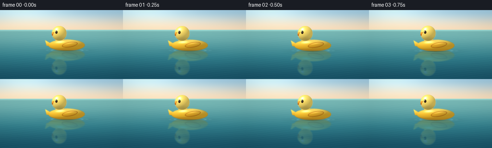
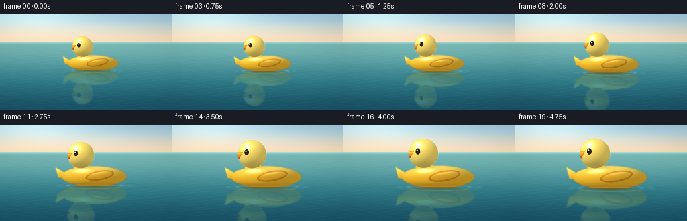
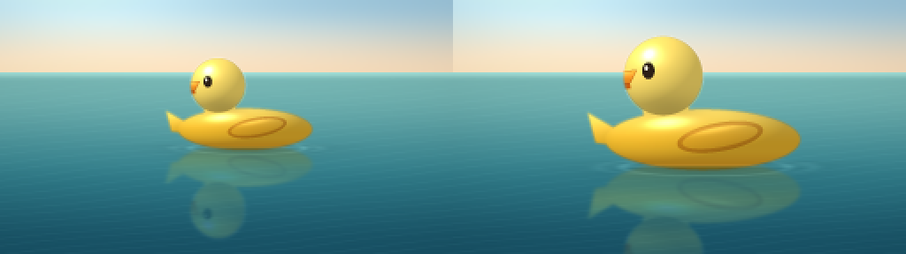
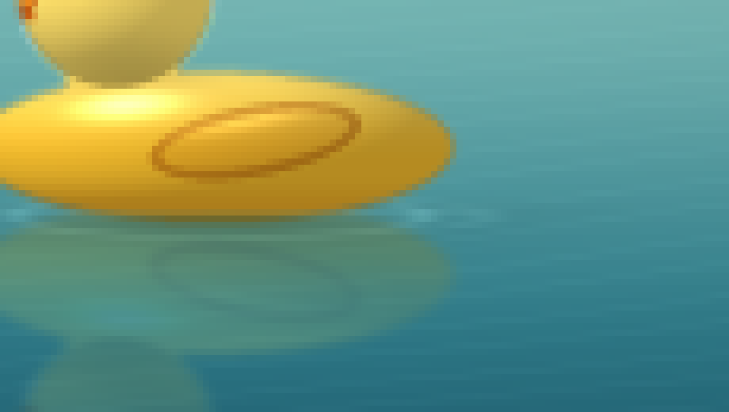

CODING AGENTS AS PIXEL WORLD MODELS
traex/DeepSeek-V4.1-Flash · phygen_065
点击播放 · 原生 RGB 像素
逐轮保存的候选
回放视频、检查图与代码变化。
每份候选均可单独播放。实际图片检查记录在下方工具轨迹中。
候选 01播放与检查图
点击播放 · 原生 RGB 像素


展开代码变化
--- 上一保存版本
+++ 本次保存版本
@@ -0,0 +1,440 @@
+"""Procedural RGB video: a rubber duck drifts closer across calm water."""
+
+from pathlib import Path
+import math
+import shutil
+
+import cv2
+import numpy as np
+
+from artifact_io import save
+
+
+ROOT = Path(__file__).resolve().parent
+WIDTH, HEIGHT = 256, 144
+FRAMES = 20
+FPS = 4.0
+SS = 4
+
+
+def srgb(hex_color):
+ value = hex_color.lstrip("#")
+ return np.array([int(value[i : i + 2], 16) for i in (0, 2, 4)], np.float32)
+
+
+def smoothstep(edge0, edge1, value):
+ x = np.clip((value - edge0) / (edge1 - edge0), 0.0, 1.0)
+ return x * x * (3.0 - 2.0 * x)
+
+
+def gaussian_blur(array, sigma):
+ return cv2.GaussianBlur(array, (0, 0), sigmaX=sigma, sigmaY=sigma)
+
+
+def make_background(t, frame_index, width, height):
+ yy, xx = np.mgrid[0:height, 0:width].astype(np.float32)
+ x = xx / width
+ y = yy / height
+ horizon = 0.285
+
+ sky_top = srgb("#9fc9df")
+ sky_haze = srgb("#f2d9b9")
+ sky_mix = smoothstep(0.0, horizon, y)[..., None]
+ image = sky_top * (1.0 - sky_mix) + sky_haze * sky_mix
+
+ # Soft dawn glow from the upper-left, kept low contrast.
+ glow = np.exp(
+ -(
+ ((x - 0.12) / 0.42) ** 2
+ + ((y + 0.10) / 0.34) ** 2
+ )
+ )
+ image += glow[..., None] * srgb("#ffe1a4") * 0.20
+
+ # A few long, blurred cloud bands give the horizon depth.
+ clouds = np.zeros((height, width), np.float32)
+ for cy, cx, rx, ry, opacity in (
+ (0.080, 0.25, 0.25, 0.018, 0.22),
+ (0.125, 0.67, 0.32, 0.020, 0.17),
+ (0.205, 0.42, 0.38, 0.014, 0.13),
+ (0.245, 0.82, 0.24, 0.011, 0.10),
+ ):
+ cloud = np.exp(
+ -(
+ ((x - cx) / rx) ** 2
+ + ((y - cy) / ry) ** 2
+ )
+ )
+ clouds += cloud * opacity
+ clouds = gaussian_blur(clouds.astype(np.float32), 9.0 * SS)
+ image += clouds[..., None] * srgb("#fff8e8")
+
+ horizon_row = int(horizon * height)
+ image[:horizon_row] = np.clip(image[:horizon_row], 0, 255)
+
+ # Still water: cool at the horizon, deeper teal toward the viewer.
+ water_far = srgb("#78b8b5")
+ water_mid = srgb("#327f8c")
+ water_near = srgb("#185367")
+ wn = np.clip((y - horizon) / (1.0 - horizon), 0.0, 1.0)
+ wm = smoothstep(0.0, 0.65, wn)
+ water = water_far * (1.0 - wm[..., None]) + water_mid * wm[..., None]
+ near_mix = smoothstep(0.45, 1.0, wn)[..., None]
+ water = water * (1.0 - near_mix) + water_near * near_mix
+
+ # Low-amplitude crossing ripples; denser and wider closer to the camera.
+ u = xx / SS
+ v = (yy - horizon_row) / SS
+ vv = np.maximum(v, 0.0)
+ phase = (
+ 0.075 * u
+ + 0.73 * vv
+ + 0.45 * t
+ + 0.55 * np.sin(0.028 * u - 0.12 * vv + 0.7 * t)
+ )
+ phase2 = (
+ -0.035 * u
+ + 1.55 * vv
+ - 0.28 * t
+ + 0.32 * np.sin(0.041 * u + 0.08 * vv - 0.4 * t)
+ )
+ ripple = (
+ np.exp(-((np.sin(phase) - 0.18) / 0.18) ** 2) * 0.030
+ + np.exp(-((np.sin(phase2) + 0.10) / 0.16) ** 2) * 0.017
+ )
+ ripple *= smoothstep(0.0, 0.18, wn) * (0.65 + 0.55 * wn)
+ water += ripple[..., None] * srgb("#d8f4e8")
+
+ # Broken sky reflection at the horizon.
+ horizon_glow = np.exp(-((y - horizon) / 0.018) ** 2)
+ water += horizon_glow[..., None] * srgb("#e6d3b8") * 0.19
+
+ image[horizon_row:] = np.clip(water[horizon_row:], 0, 255)
+
+ # Fine darkening in the lower corners improves the sense of depth.
+ vignette = np.clip(
+ ((x - 0.5) / 0.76) ** 2 + ((y - 0.52) / 0.82) ** 2,
+ 0.0,
+ 1.0,
+ )
+ image *= (1.0 - 0.08 * vignette)[..., None]
+ return image.astype(np.float32), horizon_row
+
+
+def ellipse_field(u, v, cx, cy, rx, ry):
+ return ((u - cx) / rx) ** 2 + ((v - cy) / ry) ** 2
+
+
+def render_duck(scale, center_x, waterline_y, t, width, height):
+ yy, xx = np.mgrid[0:height, 0:width].astype(np.float32)
+ body_width = 96.0 * SS * scale
+ u = (xx - center_x) / body_width
+ v = (yy - waterline_y) / body_width
+
+ body_ellipse = ellipse_field(u, v, -0.015, -0.132, 0.505, 0.158) <= 1.0
+ neck = ellipse_field(u, v, -0.205, -0.305, 0.120, 0.180) <= 1.0
+ head = ellipse_field(u, v, -0.218, -0.462, 0.205, 0.205) <= 1.0
+
+ tail_points = np.array(
+ [
+ [-0.465, -0.188],
+ [-0.608, -0.270],
+ [-0.568, -0.115],
+ [-0.430, -0.095],
+ ],
+ np.float32,
+ )
+ tail_shift = np.array([center_x, waterline_y], np.float32)
+ tail_px = np.round(tail_points * body_width + tail_shift).astype(np.int32)
+ tail = np.zeros((height, width), np.uint8)
+ cv2.fillPoly(tail, [tail_px], 255)
+ tail = tail.astype(bool)
+
+ body_surface = body_ellipse | neck | tail
+ silhouette = body_surface | head
+
+ # Base yellow with a warm top and a slightly deeper amber underside.
+ top_yellow = srgb("#ffe06a")
+ mid_yellow = srgb("#f5bd2d")
+ low_yellow = srgb("#d78b16")
+ g = np.clip((v + 0.31) / 0.39, 0.0, 1.0)
+ upper_mix = smoothstep(0.0, 0.55, g)
+ base = top_yellow * (1.0 - upper_mix[..., None]) + mid_yellow * upper_mix[..., None]
+ lower_mix = smoothstep(0.58, 1.0, g)
+ base = base * (1.0 - lower_mix[..., None]) + low_yellow * lower_mix[..., None]
+
+ # Rounded-body normal and key light make the toy read as glossy volume.
+ bx = (u + 0.015) / 0.505
+ by = (v + 0.132) / 0.158
+ bz = np.sqrt(np.clip(1.0 - bx * bx - by * by, 0.0, 1.0))
+ light = np.array([-0.54, -0.70, 0.47], np.float32)
+ light /= np.linalg.norm(light)
+ half = np.array([-0.36, -0.56, 0.75], np.float32)
+ half /= np.linalg.norm(half)
+ body_diffuse = np.clip(bx * light[0] + by * light[1] + bz * light[2], 0.0, 1.0)
+ body_spec = np.clip(bx * half[0] + by * half[1] + bz * half[2], 0.0, 1.0) ** 42
+ body_rgb = base * (0.74 + 0.36 * body_diffuse[..., None])
+ body_rgb += srgb("#fff4cf") * (body_spec[..., None] * 0.55)
+
+ # Head sphere, laid over the body and neck.
+ hx = (u + 0.218) / 0.205
+ hy = (v + 0.462) / 0.205
+ hz = np.sqrt(np.clip(1.0 - hx * hx - hy * hy, 0.0, 1.0))
+ head_diffuse = np.clip(hx * light[0] + hy * light[1] + hz * light[2], 0.0, 1.0)
+ head_spec = np.clip(hx * half[0] + hy * half[1] + hz * half[2], 0.0, 1.0) ** 52
+ head_rgb = base * (0.77 + 0.34 * head_diffuse[..., None])
+ head_rgb += srgb("#fff7d7") * (head_spec[..., None] * 0.66)
+
+ rgb = body_rgb.copy()
+ rgb[head] = head_rgb[head]
+
+ # Softer hand-painted highlight on the crown.
+ crown_glow = np.exp(
+ -(
+ ((u + 0.285) / 0.072) ** 2
+ + ((v + 0.555) / 0.045) ** 2
+ )
+ )
+ rgb += srgb("#fff6d4") * (crown_glow[..., None] * 0.18)
+
+ # Ambient occlusion where the head meets the body.
+ neck_shadow = np.exp(
+ -(
+ ((u + 0.185) / 0.185) ** 2
+ + ((v + 0.285) / 0.080) ** 2
+ )
+ )
+ rgb *= (1.0 - 0.16 * neck_shadow[..., None])
+
+ # A shallow molded wing, with a warm rim and a darker crease.
+ angle = math.radians(-10.0)
+ ca, sa = math.cos(angle), math.sin(angle)
+ wu = (u - 0.075) * ca + (v + 0.145) * sa
+ wv = -(u - 0.075) * sa + (v + 0.145) * ca
+ wing = ((wu / 0.225) ** 2 + (wv / 0.074) ** 2) <= 1.0
+ wing &= body_surface
+ wing_inner = ((wu / 0.198) ** 2 + (wv / 0.052) ** 2) <= 1.0
+ wing_edge = wing & ~wing_inner
+ rgb[wing] *= np.array([0.96, 0.92, 0.86], np.float32)
+ rgb[wing_edge] *= np.array([0.88, 0.79, 0.70], np.float32)
+ wing_highlight = np.exp(
+ -(
+ ((wu + 0.020) / 0.145) ** 2
+ + ((wv + 0.044) / 0.018) ** 2
+ )
+ ) * wing
+ rgb += srgb("#ffeaa2") * (wing_highlight[..., None] * 0.16)
+
+ # Orange beak, facing left, with a clean dark separation line.
+ upper_beak_pts = np.array(
+ [
+ [-0.354, -0.490],
+ [-0.470, -0.486],
+ [-0.563, -0.452],
+ [-0.526, -0.424],
+ [-0.390, -0.424],
+ ],
+ np.float32,
+ )
+ lower_beak_pts = np.array(
+ [
+ [-0.391, -0.423],
+ [-0.520, -0.423],
+ [-0.475, -0.391],
+ [-0.388, -0.397],
+ ],
+ np.float32,
+ )
+ upper_px = np.round(upper_beak_pts * body_width + tail_shift).astype(np.int32)
+ lower_px = np.round(lower_beak_pts * body_width + tail_shift).astype(np.int32)
+ upper_beak = np.zeros((height, width), np.uint8)
+ lower_beak = np.zeros((height, width), np.uint8)
+ cv2.fillPoly(upper_beak, [upper_px], 255)
+ cv2.fillPoly(lower_beak, [lower_px], 255)
+ upper_beak = upper_beak.astype(bool)
+ lower_beak = lower_beak.astype(bool)
+ beak_mask = upper_beak | lower_beak
+
+ beak_g = np.clip((v + 0.50) / 0.115, 0.0, 1.0)
+ beak_top = srgb("#ffad32")
+ beak_low = srgb("#d96b0d")
+ beak_rgb = beak_top * (1.0 - beak_g[..., None]) + beak_low * beak_g[..., None]
+ beak_rgb += srgb("#ffe2a0") * (
+ np.exp(
+ -(
+ ((u + 0.445) / 0.080) ** 2
+ + ((v + 0.477) / 0.018) ** 2
+ )
+ )[..., None]
+ * 0.24
+ )
+ rgb[beak_mask] = beak_rgb[beak_mask]
+ rgb[lower_beak] *= np.array([0.90, 0.78, 0.74], np.float32)
+
+ seam = upper_beak & ~cv2.erode(upper_beak.astype(np.uint8), np.ones((3, 3), np.uint8)).astype(bool)
+ rgb[seam] *= np.array([0.73, 0.54, 0.40], np.float32)
+
+ # Eye: dark lacquer with a single tiny window reflection.
+ eye_cx, eye_cy = -0.295, -0.488
+ eye = ellipse_field(u, v, eye_cx, eye_cy, 0.032, 0.043) <= 1.0
+ eye &= head
+ rgb[eye] = np.array([44, 31, 22], np.float32)
+ glint = ellipse_field(u, v, eye_cx - 0.011, eye_cy - 0.014, 0.0095, 0.013) <= 1.0
+ glint &= eye
+ rgb[glint] = np.array([255, 249, 226], np.float32)
+
+ # Narrow edge occlusion keeps the silhouette crisp without an outline.
+ silhouette_u8 = silhouette.astype(np.uint8)
+ eroded = cv2.erode(silhouette_u8, np.ones((3, 3), np.uint8))
+ edge = silhouette & ~eroded.astype(bool)
+ rgb[edge] *= np.array([0.82, 0.77, 0.72], np.float32)
+
+ # The water covers the lowest sliver of the body.
+ underwater = yy > waterline_y + 0.006 * body_width
+ rgb[underwater] *= np.array([0.72, 0.83, 0.85], np.float32)
+
+ alpha = np.where(silhouette, 255.0, 0.0).astype(np.float32)
+ alpha[underwater] *= 0.92
+ alpha = gaussian_blur(alpha, 0.55 * SS)
+ rgb = np.clip(rgb, 0, 255)
+ rgba = np.dstack([rgb, alpha])
+ return rgba, body_width, silhouette
+
+
+def make_reflection(duck_rgba, waterline_y, t, body_width, width, height):
+ yy, xx = np.mgrid[0:height, 0:width].astype(np.float32)
+ depth = yy - waterline_y
+ active = depth > 0
+
+ # Reflection is sampled from the same sprite, flipped across the waterline.
+ src_y = waterline_y - depth / 1.035
+ src_y += np.sin(depth * 0.095 + t * 1.35) * (0.35 + 0.55 * smoothstep(0.0, body_width, depth))
+ src_x = xx + np.sin(depth * 0.060 + xx * 0.010 + t * 1.1) * (
+ 0.6 + 0.75 * smoothstep(0.0, body_width, depth)
+ )
+ map_x = src_x.astype(np.float32)
+ map_y = src_y.astype(np.float32)
+ reflected = cv2.remap(
+ duck_rgba,
+ map_x,
+ map_y,
+ interpolation=cv2.INTER_LINEAR,
+ borderMode=cv2.BORDER_CONSTANT,
+ borderValue=(0, 0, 0, 0),
+ )
+ reflected = cv2.GaussianBlur(reflected, (0, 0), sigmaX=0.9 * SS, sigmaY=0.42 * SS)
+
+ rgb = reflected[..., :3]
+ alpha = reflected[..., 3] / 255.0
+ fade = np.exp(-np.maximum(depth, 0.0) / (body_width * 1.08))
+ alpha *= fade * 0.44
+ alpha *= active.astype(np.float32)
+ alpha *= 0.82 + 0.18 * np.sin(depth * 0.075 + t * 1.7)
+ alpha = np.clip(alpha, 0.0, 0.52)
+
+ # Water absorbs and scatters the reflected color.
+ rgb = rgb * 0.72 + srgb("#3b9299") * 0.28
+ rgb *= np.array([0.83, 0.97, 0.99], np.float32)
+ return np.dstack([np.clip(rgb, 0, 255), alpha * 255.0]).astype(np.float32)
+
+
+def composite(base, overlay):
+ alpha = overlay[..., 3:4] / 255.0
+ return base * (1.0 - alpha) + overlay[..., :3] * alpha
+
+
+def add_contact_water(base, center_x, waterline_y, body_width, t, width, height):
+ yy, xx = np.mgrid[0:height, 0:width].astype(np.float32)
+ depth = (yy - waterline_y) / (body_width * 0.11)
+ across = (xx - center_x) / (body_width * 0.52)
+ shadow = np.exp(-(across**2 + depth**2 * 1.6)) * (yy >= waterline_y - body_width * 0.02)
+ base *= (1.0 - 0.12 * shadow[..., None])
+
+ # Two very quiet wake rings anchor the duck to the surface.
+ rings = np.zeros((height, width), np.float32)
+ for radius, strength in ((0.43, 0.08), (0.56, 0.045)):
+ dist = np.sqrt(
+ ((xx - center_x) / (body_width * radius)) ** 2
+ + ((yy - waterline_y - body_width * 0.012) / (body_width * 0.045)) ** 2
+ )
+ rings += np.exp(-((dist - 1.0) / 0.075) ** 2) * strength
+ rings *= np.exp(-((yy - waterline_y) / (body_width * 0.12)) ** 2)
+ rings *= 0.92 + 0.08 * np.sin(t * 2.0 + xx * 0.03)
+ base += rings[..., None] * srgb("#d9f3e7")
+ return base
+
+
+def render_frame(index):
+ t = index / (FRAMES - 1)
+ eased = t * t * (3.0 - 2.0 * t)
+ width, height = WIDTH * SS, HEIGHT * SS
+
+ background, horizon_y = make_background(t, index, width, height)
+
+ scale = 0.785 + 0.355 * eased
+ center_x = WIDTH * SS * (0.545 + 0.012 * eased)
+ bob = math.sin(index * math.pi / 5.0 + 0.35) * 0.65 * SS
+ waterline_y = HEIGHT * SS * (0.575 + 0.075 * eased) + bob
+
+ duck, body_width, _ = render_duck(
+ scale, center_x, waterline_y, t, width, height
+ )
+ reflection = make_reflection(
+ duck, waterline_y, t, body_width, width, height
+ )
+
+ frame = composite(background, reflection)
+ frame = add_contact_water(
+ frame, center_x, waterline_y, body_width, t, width, height
+ )
+ frame = composite(frame, duck)
+
+ # A fine bright waterline catches the body edge.
+ yy, xx = np.mgrid[0:height, 0:width].astype(np.float32)
+ line = np.exp(-((yy - waterline_y - 0.5 * SS) / (0.75 * SS)) ** 2)
+ line *= np.exp(-((xx - center_x) / (body_width * 0.48)) ** 8)
+ frame += line[..., None] * srgb("#b9dfd4") * 0.08
+
+ frame = np.clip(frame, 0, 255).astype(np.uint8)
+ small = cv2.resize(frame, (WIDTH, HEIGHT), interpolation=cv2.INTER_AREA)
+
+ # A restrained final unsharp pass recovers detail after supersampling.
+ blurred = cv2.GaussianBlur(small, (0, 0), 0.65)
+ small = cv2.addWeighted(small, 1.12, blurred, -0.12, 0)
+ return np.clip(small, 0, 255).astype(np.uint8)
+
+
+def write_video(frames, path):
+ writer = cv2.VideoWriter(
+ str(path),
+ cv2.VideoWriter_fourcc(*"mp4v"),
+ FPS,
+ (WIDTH, HEIGHT),
+ )
+ if not writer.isOpened():
+ return False
+ for frame in frames:
+ writer.write(cv2.cvtColor(frame, cv2.COLOR_RGB2BGR))
+ writer.release()
+ return True
+
+
+def main():
+ frames = np.stack([render_frame(i) for i in range(FRAMES)])
+ assert frames.shape == (FRAMES, HEIGHT, WIDTH, 3)
+ assert frames.dtype == np.uint8
+ save(frames, ROOT)
+
+ candidate = ROOT / "candidates" / "v1"
+ if candidate.exists():
+ shutil.rmtree(candidate)
+ candidate.mkdir(parents=True)
+ shutil.copytree(ROOT / "frames", candidate / "frames")
+ shutil.copy2(ROOT / "inspection.png", candidate / "inspection.png")
+
+ write_video(frames, ROOT / "rgb.mp4")
+ print(f"Rendered {FRAMES} frames at {WIDTH}x{HEIGHT}, {FPS:g} fps")
+
+
+if __name__ == "__main__":
+ main()
可观测工具轨迹
实际执行的命令与返回图片。
命令 1exit 0
/bin/bash -c "sed -n '1,240p' prompt.txt"
命令 2exit 0
/bin/bash -c "sed -n '1,280p' GENERATION_RULES.md"
命令 3exit 0
/bin/bash -c 'cat task_spec.json'
命令 4exit 0
/bin/bash -c "printf 'FILES\\n'; rg --files -g '"'!*.mp4'"' -g '"'!*.mov'"' -g '"'!*.webm'"' | sed -n '1,240p'; printf '\\nTOOLS\\n'; command -v ffmpeg; command -v blender; command -v python3; command -v node"
命令 5exit 0
/bin/bash -c "sed -n '1,280p' artifact_io.py"
命令 6exit 0
/bin/bash -c "sed -n '1,240p' player_template.html"
命令 7exit 0
/bin/bash -c "python3 - <<'PY'
import numpy, PIL
print('numpy', numpy.__version__)
print('PIL', PIL.__version__)
try:
import scipy; print('scipy', scipy.__version__)
except Exception as e: print('scipy unavailable', e)
try:
import cv2; print('cv2', cv2.__version__)
except Exception as e: print('cv2 unavailable', e)
PY"命令 8exit 0
/bin/bash -c 'python3 generate.py'
命令 9exit 0
/bin/bash -c "python3 - <<'PY'
from PIL import Image
im0=Image.open('frames/00.png')
im19=Image.open('frames/19.png')
out=Image.new('RGB',(512,144))
out.paste(im0,(0,0)); out.paste(im19,(256,0))
out.resize((1024,288), Image.Resampling.NEAREST).save('.tmp/endpoints.png')
PY"命令 10exit 0
/bin/bash -c "python3 - <<'PY'
from PIL import Image
im=Image.open('frames/00.png')
im.crop((105,50,220,115)).resize((920,520),Image.Resampling.NEAREST).save('.tmp/duck_crop.png')
PY"命令 11exit 0
/bin/bash -c "python3 - <<'PY'
import cv2, numpy as np
from pathlib import Path
cap=cv2.VideoCapture('rgb.mp4')
count=int(cap.get(cv2.CAP_PROP_FRAME_COUNT)); fps=cap.get(cv2.CAP_PROP_FPS)
w=int(cap.get(cv2.CAP_PROP_FRAME_WIDTH)); h=int(cap.get(cv2.CAP_PROP_FRAME_HEIGHT))
means=[]; diffs=[]
prev=None
while True:
ok, f=cap.read()
if not ok: break
means.append(f.mean())
if prev is not None: diffs.append(np.abs(f.astype(float)-prev).mean())
prev=f
cap.release()
print('mp4', count, fps, w, h)
print('mean luminance', round(min(means),2), round(max(means),2))
print('adjacent mean abs diff', round(min(diffs),2), round(max(diffs),2))
print('frames', len(list(Path('frames').glob('*.png'))))
PY"命令 12exit 0
/bin/bash -c "ls -lh rgb.mp4 inspection.png pixels.npz index.html frames | sed -n '1,80p'"
命令 13exit 0
/bin/bash -c "python3 - <<'PY'
import numpy as np
from PIL import Image
for i in [0,5,10,15,19]:
a=np.asarray(Image.open(f'frames/{i:02d}.png'))
print(i, 'range', int(a.min()), int(a.max()), 'unique', len(np.unique(a.reshape(-1,3),axis=0)))
PY"视觉工具实际返回图片 1

视觉工具实际返回图片 2

视觉工具实际返回图片 3

保存候选 1 份；完成命令 13 次；可验证图片返回 3 张。原始 API 响应与完整日志保留在本地。